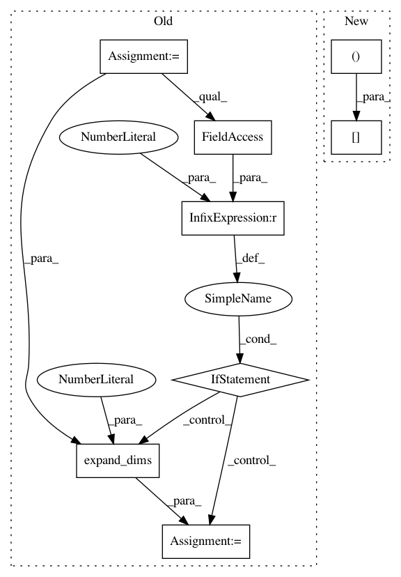

6917d8a3dbf6617f02b1247fd50fbc20d3cb6fd4,codes/data/LR_dataset.py,LRDataset,__getitem__,#LRDataset#Any#,29
Before Change
else:
img_LR = util.read_lmdb_img(self.LR_env, LR_path)
img_LR = img_LR.astype(np.float32) / 255.
if img_LR.ndim == 2:
img_LR = np.expand_dims(img_LR, axis=2)
H, W, C = img_LR.shape
// channel conversion
if self.opt["color"]:
After Change
// HWC to CHW, BGR to RGB, numpy to tensor
if img_LR.shape[2] == 3:
img_LR = img_LR[:, :, [2, 1, 0]]
img_LR = torch.from_numpy(np.ascontiguousarray(np.transpose(img_LR, (2, 0, 1)))).float()
return {"LR": img_LR, "LR_path": LR_path}
In pattern: SUPERPATTERN
Frequency: 3
Non-data size: 8
Instances
Project Name: xinntao/BasicSR
Commit Name: 6917d8a3dbf6617f02b1247fd50fbc20d3cb6fd4
Time: 2018-06-10
Author: wxt1994@126.com
File Name: codes/data/LR_dataset.py
Class Name: LRDataset
Method Name: __getitem__
Project Name: NifTK/NiftyNet
Commit Name: e2b2e773215b5360e8398b3199806b2e98ae4dc6
Time: 2019-07-03
Author: carole.sudre@kcl.ac.uk
File Name: niftynet/engine/windows_aggregator_grid.py
Class Name: GridSamplesAggregator
Method Name: decode_batch
Project Name: NifTK/NiftyNet
Commit Name: e871df8da1390d0be46434ac606921ae9f85841f
Time: 2019-06-08
Author: carole.sudre@kcl.ac.uk
File Name: niftynet/engine/windows_aggregator_grid.py
Class Name: GridSamplesAggregator
Method Name: decode_batch